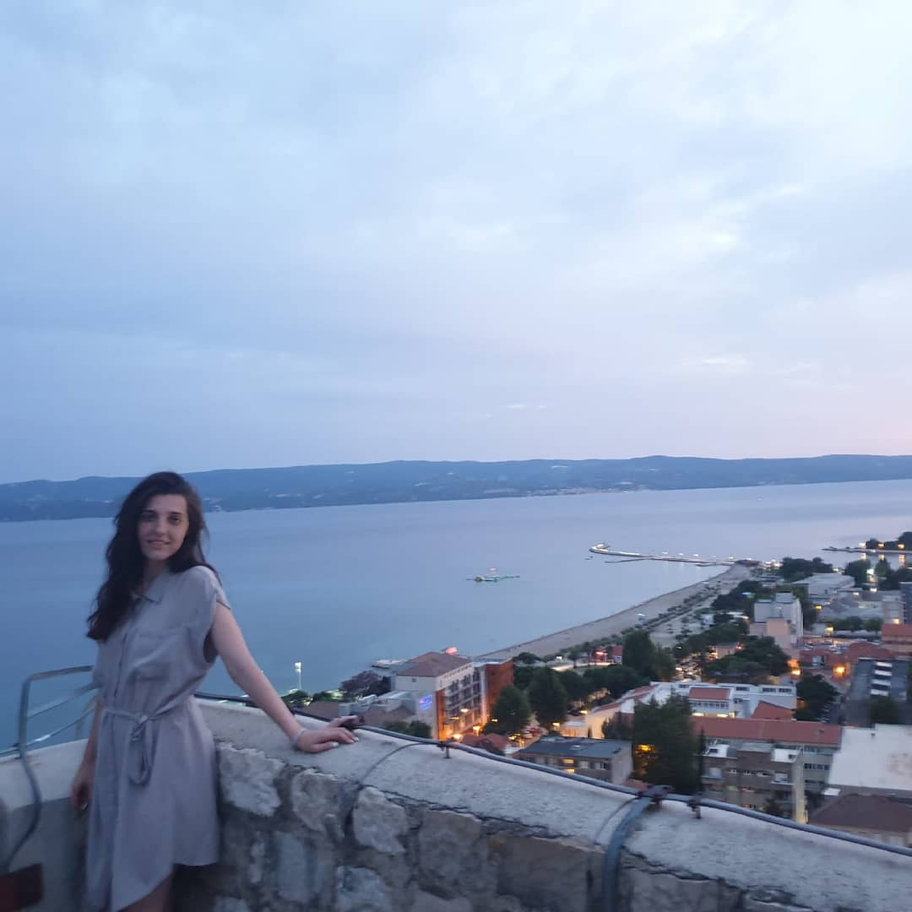

Rođena Zagrepčanka koja nosi Dinamo u srcu, a more u duši.
„Drag mi je Dinamo, ali nije baš da ga nosim u srcu. Radije napiši da nosim Boga u srcu“, rekla
bi ona
da vidi dok pravim njenu web stranicu.
Ovo je priča o Zrinki, rođenoj prije 30 zima, 5. siječnja 1991. godine.
TKO JE ZRINKA?

Mažoretkinja, animatorica, jedrašica, psihologinja, povjesničarka, sportašica, modna stilistica,
referentica
nabave...Zrinka je sve! Ali prije svega, ona je Božje dijete. I Rezino i Antino dijete, dakako, kao
i Nevenova
sestra. Ipak, Zadar i brojni mladi okupljeni na susretu Salezijanske mladeži otkrili su joj još
davnih godina
koji je njen pravi identitet. I tu zapravo počinje njen pravi život. Život u Kristu kojega je u
punini počela
živjeti služeći u najdražem joj Oratoriju Dominik Savio na Jarunu. Imala je i neke
heretičke
početke poput služenja kod franjevaca i karmelićanki, ali brzo je otkrila da je salezijanska karizma
njen put,
istina i život.
„Mnogo lepo, lepi“, rekla bi ona.
„Znam, lepa“, odgovorio bi joj ushićeno, potom zapjevavši po stoti put tog dana:
„Leeepaaaa,
leeepaaaaaaa, lepa ujutro lepa u podne. Leeeeeepaaaaaaa, leeeeepaaaaaaaaaa, kada se spušta
noooooooooooć!
Tako smo došli do nadimaka koje imamo jedno za drugo. Lepi i lepa. Ali nije Zrinka samo lepa. Ona
ima i
mnogo talenata, točnije to su: Developer, Woo, Includer, Adaptability,
Positivity.
Sangvinična djevojka s izraženom egzistencijalnom i intrapersonalnom inteligencijom, željna
svoga plemena,
ali i samoće, pravi je spoj osobe koja se može snaći u svakoj situaciji. Ipak, ona najviše voli
ljude.
Točnije, pomagati ljudima. Još točnije, pomoći im da upoznaju Boga i svoj pravi identitet. Za
ljude ona dala
bi sve, nananana, nanananaaaa...